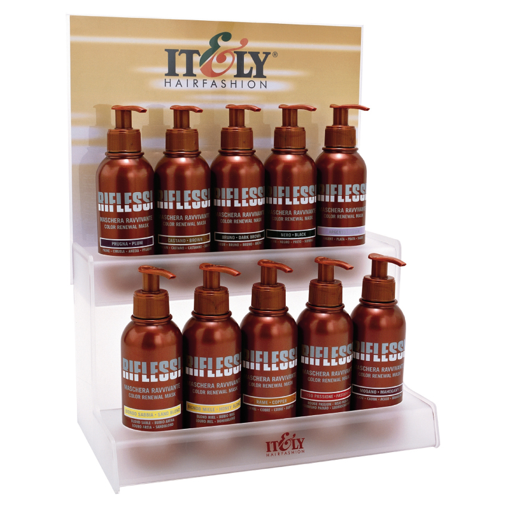

 |
RIFLESSI color maskOferece uma gama de dez novíssimas tonalidades incluídas num perfumado bálsamo revitalizador adaptado a todo tipo de cabelos e de exigências. RIFLESSI oferece-te a ocasião perfeita para dar um novo look e para poder mudar sempre que se queira. RIFLESSI, cuja coloração dura de 6 a 7 shampoos, consiste em dar diversos reflexos ao teu cabelo, naturais e pintados, graças aos seus 10 novíssimos tons. Pode-se utilizar: - para dar reflexos luminosos em cabelos pintados ou naturais Frasco 236 ml. com doseador.
|